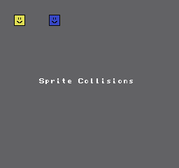
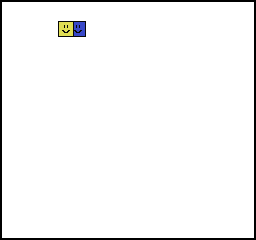

07、控制器
NES上有2个控制器端口。您可以使用端口4016和4017随时读取它们。在幕后，它会关闭和打开4016端口，然后一次读取按钮，1个按钮，8次读取，然后将它们转换为变量。
Neslib，使用此功能的方法。
pad1 = pad_poll(0) 读取控制器1。
pad2 = pad_poll(1) 读取控制器2。
如果你希望不重复读取手柄的情况下获取值可以使用下面的方法再次取到值。
pad_state(0)
pad_state(1)
pad_trigger() 获取最近按下的按钮。我不用它。
如果你用了，顺序将是pad_trigger() 然后是pad_state()，因为触发器运行了pad_poll()函数。
我写了一个函数get_pad_new()，它类似于pad_trigger()，除了先运行pad_poll() 然后运行get_pad_new()。
pad1 = pad_poll(0);
pad1_new = get_pad_new(0);
pad1_new 会获取最近被按下的按钮。如果按下了暂停键，我们不希望他连续的暂停、恢复、暂停、恢复的循环。应该是松开暂停键，再按下的时候才会修改当前状态（暂停再按一次应该恢复到运行状态）
pad1 是一个8位的char类型，正好是8个按钮的字段位置。我们需要用位标识来判断按下了那个按键。
if(pad1_new & PAD_START){
Pause();
}
精灵与碰撞
我给每个精灵都设置了单独的控制，当他们碰撞的时候就改变背景颜色。
if（collision）{
pal_col（0,0x30）;
}
我写了个功能，可以测试任何精灵对象是否发生了触碰。函数需要2个4字节的对象(或数组)，字节顺序是(x,y,宽,高)
我让这个函数接受2个void指针，我希望以后可以使用不同类型的对象结构。至少，这是个方案。
碰撞检测代码例子
collision = check_collision(&BoxGuy1, &BoxGuy2);
我们还能把他直接放到if条件里使用
if(check_collision(&BoxGuy1, &BoxGuy2))
可以考虑使用ASM汇编方式优化这个代码
if((obj1_right >= obj2_left) &&
(obj2_right >= obj1_left) &&
(obj1_bottom >= obj2_top) &&
(obj2_bottom >= obj1_top)) return 1;
else return 0;
在发生碰撞的时候屏幕背景变成了白色，能确认他生效了。
一个精灵离开另一个精灵一半的时候会有点问题，不过这已经满足需求了。


https://github.com/nesdoug/08_Pads/blob/master/Pads.c
https://github.com/nesdoug/08_Pads